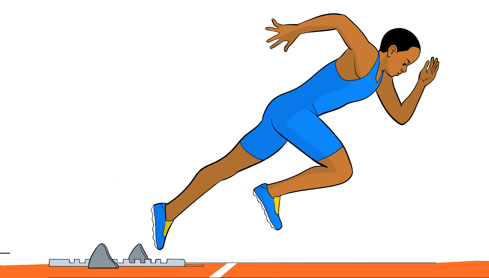

(iii)Extend the front leg while the rear leg completes its swinging action;
(iv)Move the arm of the leading leg first followed by the arm of the rear leg; and
(v)Take smooth short stride from starting line.

Acceleration
In the acceleration phase, the sprinter increases speed when making transition to the running action. For athlete to maximise their acceleration, the low body position is desirable when leaving the blocks. In this phase do the following:
(i)Sprint with the legs behind the body;
(ii)Continue to lean forward to create more power, as shown in Figure 5.6; and
(iii)Swing the arms vigorously backwards and forwards as you drive from the blocks to gain momentum.